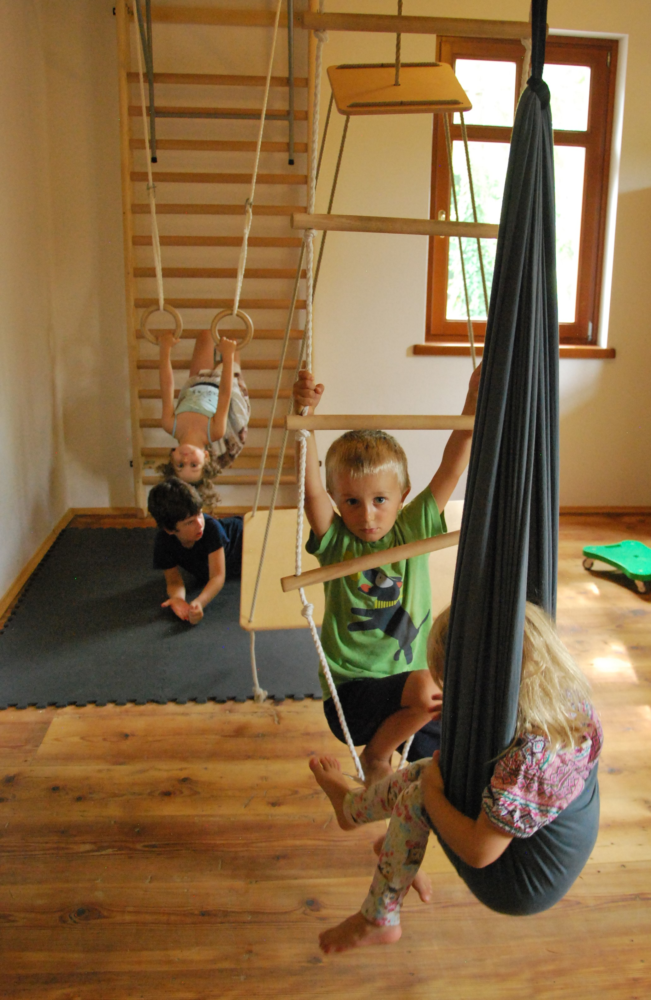

Harmonikus személyiségfejlődés és idegrendszeri érés támogatására, mozgás fókuszú csoportokat
szervezünk Egerben, elsősorban önszabályozási-, érzelmi-, kapcsolati nehézséggel küzdő óvodáskorú
gyerekek számára.
A csoportok kettős vezetéssel, Dinamikus Szenzoros Integrációs Terápiás (DSZIT) szemléletben
zajlanak.
A továbbiakban szolgáltatásaink körét bővíteni fogjuk korosztály és módszerek tekintetében is.
Kövesse figyelemmel munkánkat!
Elek Ágnes Borbála, Tanácsadó szakpszichológus
2012 óta dolgozom pedagógiai szakszolgálatban. Itt azokkal a gyermekekkel foglalkozunk, akiket a
szülők saját indíttatásból, vagy a gyermek pedagógusainak javaslatára hozhatnak hozzánk,
képességeik felmérésére, viselkedési-, beilleszkedési-, fejlődési-, vagy egyéb érzelmi nehézségeik
hátterének feltérképezése céljából.
Szakmai érdeklődésem középpontjában a kezdetektől fogva a gyermekek állnak. Már gimnazista
koromban önkénteskedtem gyermekotthonban, táboroztattam gyerekeket. Ez a fajta elköteleződés,
bár kissé más formában, mindmáig az életem részét képezi.
Szakmai ismeretszerzésem folyamatáért rendkívül hálás vagyok volt gyakorlati-és
munkahelyeimnek, képzőimnek.
A gyerekekkel való munka és a saját önismeretei folyamataim is arra a felismerésre vezettek, hogy a
legörömtelibb kapcsolódások, amikben igazán otthon érzem magam szakemberként is, a mozgáson,
alkotó folyamatokon keresztül történnek.
Szerencsés vagyok, hogy egyetemista koromban megismerkedhettem a dinamikus szenzoros
integrációs (Ayres) terápiával, majd képződhettem is ezen a téren, és munkahelyeimen volt
lehetőségem tapasztalatokkal mélyíteni a megszerzett tudást.
Csodálom a gazdagságát, kreativitását, játékosságát ennek a módszernek, és csodálom mindeközben
a gyermekeket, akik elemi örömmel vesznek részt a folyamatban, és járják be a saját útjukat,
kommunikálnak a játék nyelvén, megjelenítik és feldolgozzák a konfliktusaikat, amíg mi
szakemberként ezt megtartó figyelemmel kísérjük, serkentjük. Lelkesítő számomra a folyamat,
amiben megismerhetem a velem együtt dolgozó szülőket, és gyermekeiket. Szeretem, ahogy kialakul
a bizalom és párbeszéd közöttünk, és így megszülethet a megértés a közös munka gyümölcseként.
Mindeközben rendkívül hasznosnak is tartom ezt a szemléletet, az idegrendszeri éretlenség
mibenlétének ismeretét. Értelmezhetővé teszi az eleinte sokszor ellentmondónak, érthetetlennek
látszó - szülőknek, gyermekeknek és pedagógusoknak - egyaránt nehézséget okozó tünetek
sokféleségét.
Nem lehet elégszer hangoztatni, hogy a felgyorsult világunk mozgásszegény, ingerekben azonban
kifejezetten gazdag voltát, ami a szociális kapcsolatok elszegényesedésével is együtt jár, az érlelődő
idegrendszer nehezen tudja követni. A tapasztalataim alapján ez jelentős mértékben hozzájárul a
manapság jelentkező elakadásokhoz.
A szülőkkel való munka folyamán az évek alatt erősödött a felismerésem, hogy a gyermekeknél
óvodás- iskolás korban problémát okozó tünetek, sok esetben már egész korai életszakaszban
megjelentek. A szülők többnyire érzékelték is azokat, azonban nem találtak megfelelő válaszokat a
felmerülő kérdéseikre. Ennek köszönhetően figyelmem egyre inkább a korai életszakasz fejlődése
felé irányult, tovább képeztem magam a csecsemőkori regulációs zavarok kezelése (integrált szülő-
csecsemő konzultáció), illetve a korai képességfelmérés (SEED Fejlődési Skála) irányában.
Ezeknek köszönhetően a látásmódom egyre komplexebbé vált, olyan értelmezési keretet,
munkamódot találtam, amit a mai kor nehézségei között hitelesnek, jól használhatónak érzek, és
aminek segítségével, a hozzám forduló kliensek számára egy elfogadó, inspiráló, a nehézségek
megélésével együtt is a megértést és változást támogató szemléletet biztosíthatok.
Az elmúlt tanévben alkalmunk nyílt együtt dolgozni Váczy-Herman Ágnes kolléganőmmel különféle
csoportokat vezetve. Az együttműködésünk minősége tovább növelte a csoportos munka iránti
elkötelezettségünket, inspiráló és eredményes volt a kettős vezetés.
SZAKMAI TAPASZTALATOK
| 2020-22 | Magyar Máltai Szeretetszolgálat |
|---|
| |
A Fókuszban a gyermek pályázati projektben koragyerekkori szakértőként
tevékenykedtem Heves megye néhány településén, ahol a 3 év alatti gyermekek
fejlődését követtem nyomon, támogattam. |
| 2020-tól | Heves megyei Pedagógiai Szakszolgálat Füzesabonyi Tagintézménye |
|---|
| |
Nevelési tanácsadás körébe tartozó tevékenységek, alkalomszerűen szakértői
tevékenység. |
| 2015-től | Világítani Fogok Egyesület, önkéntes |
|---|
| |
Hátrányos helyzetű gyerekek táboroztatása, családokkal kapcsolattartás. |
| 2012-20 | Fővárosi Pedagógiai Szakszolgálat IV. Ker. Tagintézménye, pszichológus |
|---|
| |
Járási szintű szakértői vizsgálatok, nevelési tanácsadás körében végzett tevékenységek
(idegrendszeri éretlenség vizsgálata és kezelése, szülő-csecsemő konzultáció),
iskolapszichológusi feladatkörök. |
| 2013-15 | Palánta Alapítvány Óvoda, óvodapszichológus |
|---|
| |
Szülőcsoportok vezetése, csoportos megfigyelések, szülőkonzultáció. |
| 2010 | Óbudai Nevelési Tanácsadó, III. ker., 60 órás szakmai gyakorlat |
|---|
| |
Diagnosztikai munka, Dszit csoportok támogatása. |
| 2010 | MRE Bethesda Gyermekkórház, családterápiás gyakorlat
|
|---|
| |
Családterápiás ülések részvétel, jegyzőkönyvezés. |
TANULMÁNYOK, KÉPZÉSEK
| 2017 | SEED Fejlődési Skála, 30 órás tanfolyam, Korai Fejlesztő Központ |
| 2014-2016 | Integrált szülő- csecsemő konzultáció, SOTE |
| |
Csecsemő- és kisgyermekkori regulációs zavarok kezelésére használt prevenciós,
intervenciós módszer. |
| 2014-2018 | Tanácsadó szakpszichológus képzés, ELTE |
|---|
|
Családi és párkapcsolati tanácsadás specializáció |
| 2014 | Szenzoros integrációs terápiák: saját élmény csoport |
|---|
| 2014 | Szenzoros integrációs terápiák elmélete |
|---|
| 2008-2009 | 120 óra pszichodráma sajátélmény |
|---|
| 2009 | Motivációs tréning, PPKE BTk |
|---|
| 2005-2012 | Pszichológia, Pedagógia, Pázmány Péter Katolikus Egyetem BTK (Klinikai
pszichológia-, Család- és valláspszichológia szakirány) |
|---|
Váczy-Herman Ágnes, pedagógiai szakpszichológus
2011 óta dolgozom
pedagógiai szakszolgálatban. Munkám elsősorban pszichológiai tanácsadó, támogató és
fejlesztő tevékenységen alapul.
Tevékenységem része az óvodával, iskolával összefüggő tanulási, magatartási, beilleszkedési
és egyéb pszichés problémák esetén a szülőkkel, pedagógusokkal közös konzultációs
folyamatban megoldást keresni, továbbá a gyermekekkel végzett egyéni és csoportos fejlesztő
foglalkozások keretében történő segítségnyújtás. A csoportos pszichológiai ellátás óvodáskorú
gyerekek esetében elsősorban mozgásalapú, érést, fejlődést, lelki összerendeződést segítő,
iskoláskorú gyerekek esetében személyiségfejlesztő és társas hatékonyságot fejlesztő
foglalkozást jelent.
A szülőkkel, pedagógusokkal közös konzultációs folyamatban azt tapasztaltam, hogy a
szülők, pedagógusok sokszor eszköztelennek és tehetetlennek érzik magukat a modernkori
gyermekek vonatkozásában felmerülő problémák esetén. Emiatt a konfliktusok megoldásában
gyakran aktivizálódnak rossz kommunikációs beidegződések, ösztönös minták, tévhitekre
épülő megoldási utak. Ezeknek hatására azonban a problémák nem oldódnak meg, hanem
ellenkezőleg, egy negatív spirál indul be. A nem megfelelő problémakezelés eredménye egyre
több konfliktus, egyre mélyülő ellentétek, egyre kezelhetetlenebb gyermek.
A negatív spirál ugyanakkor pozitív irányban is működik. Tudatosságunkon és a belefektetett
munkán múlik, hogy az önmagát erősítő folyamat milyen irányt vesz. Szerencsés vagyok
abban, hogy számos esetben kísérhettem a folyamatot, aminek során a felismerések, belátás,
elfogadás talaján a sodródás helyét a tudatos irányítás vette át.
A gyerekekkel végzett pszichológiai fejlesztő tevékenységeim közül különösen kedves
számomra az óvodáskorú gyermekekkel való mozgásalapú foglalkozás. Lenyűgöz, ahogy
ezek a gyerekek felszabadulnak egy lehetőségeket, kihívásokat kecsegtető térben, közegben,
ahogy örömmel, és fáradtságot nem kímélve bontakoztatják ki képességeiket, és mutatják meg
személyiségük mintáit. Megtapasztalhattam, hogy a gyerekek miközben felhőtlenül élik
gyermeki mivoltukat, belső hajtóerejük ösztönösen azok felé a kihívások felé tereli őket, ami
egyúttal fejlődésüket is szolgálja
Pszichológusi minőségem mellet fontosnak tartom megemlíteni, hogy két gyermek
édesanyja is vagyok, akiket férjemmel együtt nevelünk. A magánéleti folyamat és tapasztalás,
amelynek során családdá váltunk, hozzájárult szakmabeli szemléletem formálódásához is.
Megtapasztaltam, hogy hiába az elméleti tudás, a gyermekes lét számtalan kihívást tartogat,
ennek során elkerülhetetlenül szembesülünk saját korlátainkkal is. Ez nehéz lelki út, úgy
vélem, minden szülőnek van olyan időszaka, amikor elkel számára a támogatás, az
együttérzés.
Hiszek a kapcsolat, kapcsolódás erejében, legyen szó felnőttek közötti, felnőtt-gyerek,
vagy gyerekek közötti kapcsolatról. Azt gondolom, hogy bármikor képesek vagyunk fejlődni
abban, hogy egészségesen, őszintén tudjunk kapcsolódni egymáshoz, és önmagunkhoz.
Pszichológiai munkám során legnagyobb örömöm, amikor megszületik a közös munka
eredménye, a közös megértése a reakciók mögött húzódó okoknak. A megértésből fakadó
figyelem, és összehangolódás a kapcsolat megerősödéséhez vezet, mely aztán hozzájárul a
személyes növekedéshez, és bázisa, támasza, erőforrása lesz gyermeknek, felnőttnek
egyaránt.
Az elmúlt tanévben Elek Ágnes tanácsadó szakpszichológus kollégámmal vezettünk
közösen dinamikus szenzoros integrációs szemléletű óvodás csoportokat, illetve kamaszok és
kiskamaszok számára szociális készségfejlesztő csoportokat. A közös működés
gyümölcsözőnek bizonyult, élünk a kettős vezetés nyújtotta előnyökkel, ami által magasabb
szakmai színvonalat is képviselhetünk. Mivel tapasztaljuk, hogy egyre növekszik azon
gyerekek száma, akiknél éretlen, vagy nem megfelelően, eltérően működő idegrendszeri
működés jellemző, fókuszunkban elsősorban dinamikus szenzoros integrációs foglalkozások
lesznek. A DSZIT szemléletű ellátásnak köszönhető magasabb idegrendszeri integrációs szint
elérése mellet, a szülőkonzultáció folyamatában a támogatáson, megértésen keresztül
lehetőség nyílik a szülők gyerekeikkel való kapcsolódásának elmélyítésére is.
SZAKMAI TAPASZTALAT
| 2011- | Heves megyei Pedagógiai Szakszolgálat Füzesabonyi Tagintézménye |
|---|
| |
Pszichológus- nevelési tanácsadási tevékenység, iskolapszichológiai,
óvodapszichológiai tevékenység, szakértői tevékenység, iskola- és
óvodapszichológus feladatok koordinátora munkakör. |
| 2009-2010 | Trenkwalder, Debrecen |
|---|
| |
Pszichológus- munkaerő közvetítés |
TANULMÁNYOK, KÉPZÉSEK
| 2019 | Pedagógiai Szakpszichológus (4 félév), Eötvös Lóránd Tudományegyetem Pedagógiai és Pszichológiai Kar |
|---|
| 2010 | Okleveles Pszichológus (10 félév), Debreceni Egyetem Bölcsésztudományi Kar |
|---|
| 2010 | Pszichológus szakfordító (angol nyelvű) (4 félév), Debreceni Egyetem Bölcsésztudományi Kar |
|---|
Keressen bátran bennünket, amennyiben úgy gondolja, hogy közösen gondolkodna, dolgozna velünk
gyermeke harmonikusabb működése érdekében!